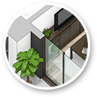
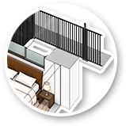

「ここに柱があるせいで、ソファが置けない…」などの不満を感じたことはありませんか？マンションでは、梁と柱によって骨組みを構成するラーメン構造が一般的でした。ただし、この方法では室内側に梁型や柱型が出っ張るような設計となる可能性があり、どうしても家具の配置上の問題や住空間のデッドスペースができるという問題があります。
ビッグヴァンでは、アウトフレーム工法により、設計段階から柱をできるだけ外に出す間取りを企画しています。
従来工法のデメリット
主に部屋の角などに家具が置きにくい。
柱を室外に出す設計を行う事により、従来の短所を補うアウトフレーム工法を採用しています。それにより、従来の設計が生み出していたデッドスペースを減らし、すっきりとした居室を実現しました。不自然な出っ張りがなくなることで、家具レイアウトの自由度が向上するだけでなく、エアコンなどの家電の取付もしやすくなります。コーナーがすっきりとした広々と使えるリビングや、快適なレイアウトにこだわりたいベッドルームなど、アウトフレーム工法の物件では、お部屋本来のポテンシャルを引き出すことが可能です。
アウトフレーム工法のメリット
部屋のコーナーを活用し、家具類をすっきりとレイアウトできる。
- 
- 
室内空間を最大限活用
バルコニー側や廊下側の柱をできるだけ外に出し、室内空間の自由なレイアウトを可能にする設計方法。
俯瞰比較図
左図は従来工法とアウトフレーム工法の俯瞰比較図です。柱を室外へ押し出す設計で、部屋のコーナー部を有効に活用できます。マンション選びの際には、事前にチェックして検討しましょう。
上画像はモデルルームのお洒落で機能的な家具レイアウトの例ですが、もし柱が室内に出ていると赤枠の部分には家具類を配置しづらくなってしまいます。お気に入りの家具類を美しくすっきりと配置して、お部屋を広々と活用できる、アウトフレーム工法を採用した物件で、理想のお部屋づくりを楽しんでください。
※間取りのタイプによっては室内に柱が入っている場合もございます。